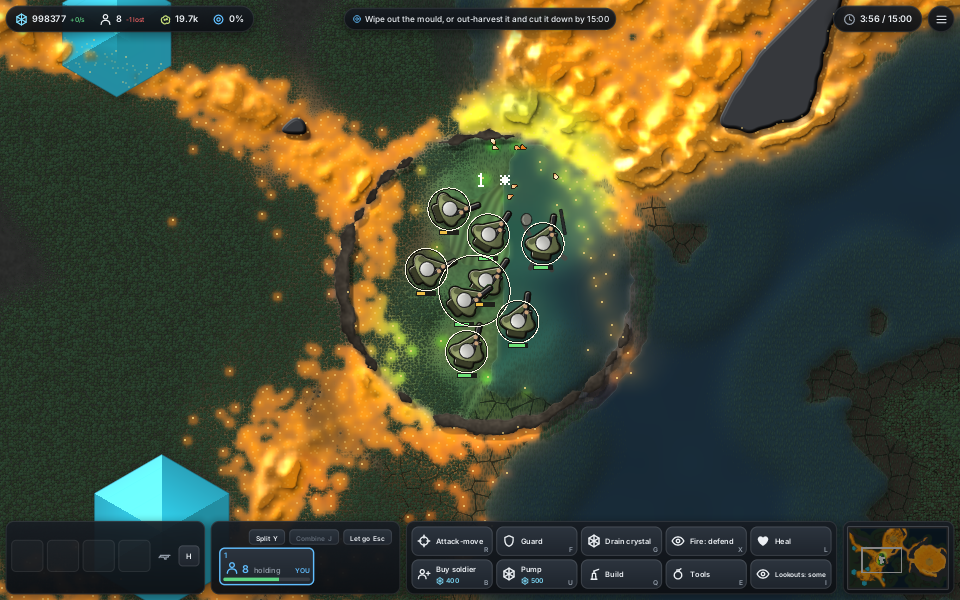

<title>Walls, Doors and Thickness</title>
<meta name="claude:viewport-fit-sides" content="cover">
<link rel="stylesheet" href="https://fonts.googleapis.com/css2?family=Space+Grotesk:wght@500;700&family=Inter:wght@400;600&display=swap">
<style>
/* Layout: one reading column; findings with their clips first, then the two choices as option cards with a top-down sketch each. */
:root {
  --bg: #f2f3ef; --fg: #1e221c; --muted: #5c6457; --line: #d2d8cc; --card: #e7eae2;
  --accent: #8a5a12; --slime: #e3a21a; --wall: #6b5d4c; --door: #3f7a8c; --soldier: #4f6b2f;
  --display: "Space Grotesk", system-ui, sans-serif; --body: "Inter", system-ui, sans-serif;
}
@media (prefers-color-scheme: dark) { :root:not([data-theme="light"]) { --bg: #151814; --fg: #e4e8df; --muted: #9ba393; --line: #30362d; --card: #1e221c; --accent: #e8b25a; --slime: #f0b232; --wall: #a8977f; --door: #6fb5c9; --soldier: #9cc06a; color-scheme: dark } }
:root[data-theme="dark"] { --bg: #151814; --fg: #e4e8df; --muted: #9ba393; --line: #30362d; --card: #1e221c; --accent: #e8b25a; --slime: #f0b232; --wall: #a8977f; --door: #6fb5c9; --soldier: #9cc06a; color-scheme: dark }
body { background: var(--bg); color: var(--fg); font-family: var(--body); line-height: 1.55; padding-block: 28px 56px; padding-left: max(16px, env(safe-area-inset-left, 0px)); padding-right: max(16px, env(safe-area-inset-right, 0px)); }
main { max-width: 1180px; margin: 0 auto; display: grid; gap: 26px; }
h1, h2, h3 { font-family: var(--display); text-wrap: balance; margin: 0; }
h1 { font-size: 2rem; } h2 { font-size: 1.25rem; } h3 { font-size: 1.02rem; }
p, li { max-width: 70ch; margin: 0; }
section { display: grid; gap: 12px; }
.lede { color: var(--muted); }
video, img { width: 100%; max-width: 100%; border-radius: 6px; display: block; background: #111; }
.cap { color: var(--muted); font-size: 0.9rem; }
ul { margin: 0; padding-left: 1.2em; display: grid; gap: 6px; }
.wrap { overflow-x: auto; }
table { border-collapse: collapse; font-variant-numeric: tabular-nums; min-width: 520px; }
th, td { text-align: left; padding: 6px 16px 6px 0; border-bottom: 1px solid var(--line); }
th { font-size: 0.8rem; text-transform: uppercase; letter-spacing: 0.05em; color: var(--muted); font-weight: 600; }
.opts { display: grid; grid-template-columns: repeat(auto-fit, minmax(250px, 1fr)); gap: 14px; }
.opt { background: var(--card); border-radius: 8px; padding: 14px; display: grid; gap: 8px; align-content: start; min-width: 0; }
.opt svg { width: 100%; height: auto; max-width: 100%; }
.tag { justify-self: start; font-size: 0.75rem; letter-spacing: 0.06em; text-transform: uppercase; font-weight: 600; color: var(--accent); }
.opt p { font-size: 0.93rem; }
.k { font-family: var(--display); font-weight: 700; color: var(--accent); }
</style>
<main>
<header style="display:grid;gap:8px">
  <h1>Walls, doors and thickness</h1>
  <p class="lede">Larder World, squad mode, planet 1 (seed 7), the default slime. The owner asked how soldiers should get through their own walls, whether walls should come thicker, and that slime never go over a wall but slowly eat through it with the real simulation. What the game does today, filmed, then the choices.</p>
</header>

<section>
  <h2>What the game does today</h2>
  <ul>
    <li><b>Slime cannot cross a standing wall.</b> A wall cell is not ground to the slime's walkers, and a walker's longest step (2 fine cells in a lunge) is shorter than the thinnest wall (4 fine cells). In every run below no walker got inside the ring until the ring was eaten through.</li>
    <li><b>It already eats walls in the real simulation.</b> Each time a walker bumps a wall cell it takes 1 from that cell's 400 health; at 0 the cell turns to rubble, which is ground. There is no timer; more slime pressing means faster eating.</li>
    <li><b>Why it looks like slime goes over walls:</b> rubble is drawn as a low wall with the same outline, and slime on it is drawn under it. A ring half eaten still looks whole while slime walks across the holes. The clip below is one run drawn twice.</li>
    <li><b>Soldiers can't cross walls at all,</b> and can't shoot through them (walls block sight and shots), so a walled-in squad can only watch the slime chew.</li>
  </ul>
</section>

<section>
  <h3>The same run, drawn as today and with rubble drawn as ground</h3>
  <video src="truth.mp4" poster="truth-312.png" controls muted loop playsinline preload="metadata"></video>
  <p class="cap">Ten soldiers hold inside a 2-cell ring 12 cells across; the slime's raids reach it from 1:15. Frames every 4 game seconds from 1:12 to 4:00 (shown 16 times faster). The counts above each picture come from the simulation: wall cells left of 643, walkers inside, soldiers alive. At 3:12, 47% of the ring is left; the left picture shows it whole.</p>
</section>

<section>
  <h3>A ring 2, 4 and 8 cells thick, same planet, same raids</h3>
  <video src="thick.mp4" controls muted loop playsinline preload="metadata"></video>
  <div class="wrap"><table>
    <tr><th>Wall</th><th>Price by cells</th><th>Left at 4:00</th><th>Left at 8:00</th><th>Slime inside from</th></tr>
    <tr><td>2 cells</td><td>1x</td><td>27%</td><td>(run ended)</td><td>2:45, 90 s after first contact</td></tr>
    <tr><td>4 cells</td><td>2x</td><td>81%</td><td>23%</td><td>6:31, about 290 s after first contact</td></tr>
    <tr><td>8 cells</td><td>4x</td><td>95%</td><td>76%</td><td>not by 8:00</td></tr>
  </table></div>
  <p class="cap">One seed, one run each, so the numbers show size, not a verdict. Doubling the wall from 2 to 4 cells made it last about three times as long, and 8 cells had lost under a quarter by 8:00. The slime only bites the face it touches, so the inner layers wait their turn. Raids at this ring came every 45 to 75 s; on deeper planets they come harder.</p>
</section>

<section>
  <h2>Choice 1: how soldiers get through their own walls</h2>
  <div class="opts">
    <div class="opt">
      <span class="tag">Recommended</span>
      <h3>A. Doors</h3>
      <svg viewBox="0 0 200 120" role="img" aria-label="A wall with a door: soldiers walk through it, slime is stopped">
        <rect x="0" y="0" width="200" height="120" style="fill:var(--card)"/>
        <rect x="96" y="6" width="10" height="38" style="fill:var(--wall)"/><rect x="96" y="76" width="10" height="38" style="fill:var(--wall)"/>
        <rect x="96" y="44" width="10" height="32" style="fill:var(--door)"/>
        <ellipse cx="160" cy="60" rx="30" ry="44" style="fill:var(--slime)" opacity="0.8"/>
        <circle cx="50" cy="60" r="7" style="fill:var(--soldier)"/><circle cx="70" cy="60" r="7" style="fill:var(--soldier)"/>
        <path d="M78 60 H118" style="stroke:var(--soldier)" stroke-width="2" stroke-dasharray="4 3" fill="none"/>
      </svg>
      <p>A stretch of wall that soldiers walk through and the slime treats as wall: it stops the slime and is eaten at the same pace. Put one on a wall with a Door button. Could be the wall's weak point (half health) so the slime breaks in where you go out.</p>
      <p class="cap">Touches only which cells soldiers may stand on, not how they walk.</p>
    </div>
    <div class="opt">
      <h3>B. Gates that open</h3>
      <svg viewBox="0 0 200 120" role="img" aria-label="A gate open while soldiers pass, slime can follow">
        <rect x="0" y="0" width="200" height="120" style="fill:var(--card)"/>
        <rect x="96" y="6" width="10" height="38" style="fill:var(--wall)"/><rect x="96" y="76" width="10" height="38" style="fill:var(--wall)"/>
        <path d="M96 44 L80 36 M106 44 L122 36" style="stroke:var(--door)" stroke-width="4"/>
        <ellipse cx="160" cy="60" rx="30" ry="44" style="fill:var(--slime)" opacity="0.8"/>
        <path d="M130 60 Q112 60 100 62" style="stroke:var(--slime)" stroke-width="10" fill="none" opacity="0.8"/>
        <circle cx="70" cy="60" r="7" style="fill:var(--soldier)"/><circle cx="118" cy="48" r="7" style="fill:var(--soldier)"/>
      </svg>
      <p>The gate opens while a soldier passes and shuts after. While it is open it is ground for everyone, so slime pressing on it pours in; shutting pushes slime out of its cells. Sorties under pressure become a timing play.</p>
      <p class="cap">Needs a new engine step on both engines (lifting wall cells), plus open and shut rules.</p>
    </div>
    <div class="opt">
      <h3>C. Climb over</h3>
      <svg viewBox="0 0 200 120" role="img" aria-label="Soldiers climbing slowly over a wall">
        <rect x="0" y="0" width="200" height="120" style="fill:var(--card)"/>
        <rect x="92" y="6" width="18" height="108" style="fill:var(--wall)"/>
        <ellipse cx="164" cy="60" rx="28" ry="44" style="fill:var(--slime)" opacity="0.8"/>
        <circle cx="60" cy="40" r="7" style="fill:var(--soldier)"/><circle cx="101" cy="72" r="7" style="fill:var(--soldier)"/>
        <path d="M66 46 Q90 66 98 70" style="stroke:var(--soldier)" stroke-width="2" stroke-dasharray="4 3" fill="none"/>
      </svg>
      <p>Any wall can be crossed by soldiers at a crawl (say 1 second per 2 cells of thickness), without shooting while on it. No doors to place; a thick wall also slows your own sorties. The slime still can't climb.</p>
      <p class="cap">Changes soldier path costs, which two other threads are rewriting right now.</p>
    </div>
  </div>
</section>

<section>
  <h2>Choice 2: thicker walls</h2>
  <div class="opts">
    <div class="opt">
      <span class="tag">Recommended</span>
      <h3>Upgrade a standing wall</h3>
      <p>Click a wall, then Thicken on its card (like pump upgrades): 2 to 4 to 6 to 8 cells, each level adding cells on your side and costing the wall's first price. You thicken where the slime is chewing, while it chews.</p>
    </div>
    <div class="opt">
      <h3>Pick the thickness when placing</h3>
      <p>The wall tool takes a width (2, 4, 6 or 8 cells, with the mouse wheel or number keys) and costs by cells, 2x to 4x. One step, but you decide before you know where the slime will press.</p>
    </div>
    <div class="opt">
      <h3>Unlock in the run's shop</h3>
      <p>Thick walls (and upgrades past them) are bought between planets. Makes walls a build path in the run, but the first planets only have thin walls.</p>
    </div>
  </div>
</section>

<section>
  <h2>Slime eating through</h2>
  
  <p class="cap">Built: the same run at 3:56 with rubble drawn as gravel ground and the slime drawn over it. The holes are where the slime got in.</p>
  <p>Keep the real simulation's bite as it is, and draw rubble as broken ground (gravel, no wall outline, slime drawn over it) so a hole reads as a hole. This part is built and going in now. The wall's cells already dim and sink as they wear. If the eating is too slow or fast after a playtest, it is two numbers (health 400 a cell, bite 1 a bump).</p>
  <p class="cap">Separate question for later: should soldiers be able to shoot over their own walls? Today a wall blocks shots both ways, so turrets behind walls can't fire either.</p>
</section>
</main>
